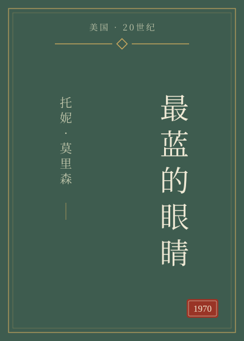
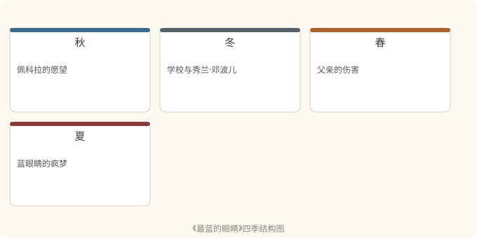

最蓝的眼睛
一、基本信息
| 作者 | 莫里森 |
|---|---|
| 成书/出版 | 1970年出版（作者页 B150 口径：最蓝的眼睛（1970）） Toni Morrison — Encyclopaedia Britannica（百科全书） |
| 国别/地区 | 美国 |
| 时代 | 现当代 · 20世纪 |
| 体裁 | 长篇小说 |
| 语言 | 英语 |

《最蓝的眼睛》四季结构图（主题·结构图）
二、创作背景
作者页（B150）：莫里森代表作谱系以'最蓝的眼睛（1970）'为起点（作者页 major_works 口径）。
莫里森为诺贝尔文学奖得主（作者页 B150 定位——详见 chonger 条）。
三、内容脉络
佩科拉渴望蓝眼睛——以'最蓝的眼睛'为黑皮肤女孩的自我憎恨之镜（通说待核）。
四季结构：秋/冬/春/夏（结构通说待核）。
四、主要人物表
| 人物 | 身份 | 说明 |
|---|---|---|
| 佩科拉 | 黑人女孩 | 渴望蓝眼（通说待核） |
| 克劳迪娅 | 叙述者 | 反抗的孩子视角（通说待核） |
五、主题与艺术特点
- 种族内部的白人审美暴力（通说）。
- 童年与社区的见证（通说）。
- '狄克与珍妮'课本的拼贴（通说待核）。
六、影响与评论
- 作者页：莫里森以《宠儿》等确立其地位；《最蓝的眼睛》为处女作（B150 作者页口径）。
Toni Morrison — Encyclopaedia Britannica（百科全书） - 美国中学与大学课程的常读文本（通说待核）。
Toni Morrison — Encyclopaedia Britannica（百科全书）
七、阅读建议
难点
- 多视角叙事与课本拼贴。
- 1940年代俄亥俄黑人社区背景。
- 《最蓝的眼睛》（南海出版公司新经典版，通说待核）。
先《最蓝的眼睛》后《宠儿》：莫里森的起点与巅峰。
八、待核实
- 1970年出版（Holt, Rinehart 说）核对。
- 佩科拉/克劳迪娅人名与四季结构核对。
- 'Dick and Jane'课本引文待核。